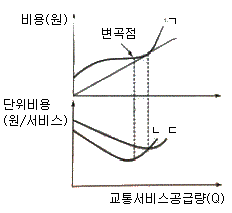
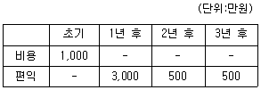
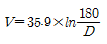
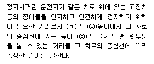
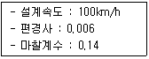

교통기사 (2020-09-26 기출문제)
1과목: 교통계획
1. 집계모형(aggregate model)과 비교하여 비집계모형(disaggregate model)의 특징에 관한 설명이 틀린 것은?
- 효용이론에 근거하며 모델의 구조는 확률모형이다.
- 정립된 모형은 전체 지역 또는 다른 지역에 적용이 불가능하며 시간적으로도 이전이 불가능하다.
- 교통정책의 단기적인 영향을 쉽게 추정할 수 있다.
- 소수의 표본 측정자료로도 모형의 정립이 가능하다.
(정답률: 67%)

2. 교통 개선 사업의 대안이 경제적 타당성이 있다고 보는 편익/비용비 값의 기준은?
- 1보다 클 때
- 0보다 클 때
- 1보다 작을 때
- 0보다 작을 때
(정답률: 81%)
3. TSM 기법의 유형 중 교통수요(차량 수요)만을 감소시키는 효과를 주는 것은?
- 카풀(carpooling)유도
- 신호주기 개선
- 교차로 도류화
- 도로 기하구조 개선
(정답률: 93%)
4. TSM 기법 중 출근시차제를 도입하는 방법은 다음 중 어느 유형에 속하는가?
- 교통공급 수준을 증대시키는 기법
- 교통수요와 교통공급을 동시에 감소시키는 기법
- 교통수요를 시간적으로 조정시키는 기법
- 교통공급은 증대시키고 교통수요를 감소시키는 기법
(정답률: 92%)
5. 대중교통체계 운영에 소요되는 가변비용(variable cost)에 속하지 않는 것은?
- 연료비
- 운전기사의 임금
- 차량 부품 구입비용
- 정류장 시설 설치비용
(정답률: 70%)
6. 어느 주차장의 평균 주차시간은 2시간이다. 한 대의 차량이 도착했을 때 이 차량이 1시간 미만으로 주차할 확률은? (단, 주차시간의 분포는 음지수분포를 따른다.)
- 33.33%
- 39.35%
- 42.31%
- 48.66%
(정답률: 14%)
7. 다음 중 사람통행실태조사방법에 해당하지 않는 것은?
- 노측면접조사
- 가구방문조사
- 영업용차량조사
- 확률적배정조사
(정답률: 70%)
8. 대중교통수간의 여러 가지 비용에 대한 아래 그림에서 ㉠, ㉡, ㉢의 내용이 모두 옳은 것은?

- ㉠ 총비용 ㉡ 한계비용 ㉢ 평균비용
- ㉠ 총비용 ㉡ 평균비용 ㉢ 한계비용
- ㉠ 평균비용 ㉡ 총비용 ㉢ 한계비용
- ㉠ 평균비용 ㉡ 한계비용 ㉢ 총비용
(정답률: 77%)
9. 승용차, 버스, 지하철의 효용함수값이 각각 –1.0, -1.5, -1.5일 때, 로짓모형에 의한 승용차의 선택확률은?
- 약 52.1%
- 약 45.2%
- 약 36.1%
- 약 27.4%
(정답률: 70%)
10. 로짓모형으로 정산한 통행시간(분)과 통행비용(원)에 대한 효용함수 계수가 각각 –0.017, -0.00⑤일 때, 통행시간의 가치는?
- 1,440원/시간
- 1,740원/시간
- 1,800원/시간
- 2,040원/시간
(정답률: 62%)
11. 교통사업 시행 시 발생되는 현금흐름도가 아래와 같을 때, 내부수익률(IRR)은?

- 5.67%
- 4.21%
- 3.67%
- 2.20%
(정답률: 50%)
12. 다음 중 버스전용차로의 용량에 영향을 미치는 요소로 가장 거리가 먼 것은?
- 요금징수방법
- 준공영제 실시여부
- 버스전용차로의 형태
- 타 차량의 혼입 정도
(정답률: 52%)
13. 폐쇄선조사의 조사 내용으로 가장 거리가 먼 것은?
- 기·종점
- 차종별 통과 교통량
- 자가 승용차 보유여부
- 시간대별 통과 교통량
(정답률: 85%)
14. 사용자 균형 통행배정 기법(user equilibrium assignment model)에 대한 설명이 틀린 것은?
- 모든 통행자는 각각의 노선에 배전된 균형 상태에서 자신의 경로를 바꾸어 통행시간을 개선할 수 있다.
- 출발지와 목적지가 같을 경우 모든 선택된 통행로에 대한 통행시간은 동일이다.
- 동행자들은 자신의 통행시간을 최소화하는 통행경로를 선택한다는 개념에서 출발하였다.
- 새로운 링크의 추가적인 건설에도 불구하고 총 통행시간이 증가하는 역설적인 결과가 나타나기도 한다.
(정답률: 50%)
15. 첨단교통체계(ITS)에서 목표로 하는 각종 사용자 서비스를 통합적으로 구현하기 위하여 시스템의 기능적·비기능적 사항과 물리적 구성 장치, 정보 흐름 등을 정의하는 것은?
- ITS 아키텍쳐
- ITS 프레임
- ITS 표준
- ITS 서브시스템
(정답률: 78%)
16. 다음 중 TSM기법의 특징으로 옳은 것은?
- 고투자 비용
- 장기적인 편의 추구
- 거시적인 기법
- 기존 시설의 활용
(정답률: 78%)
17. 도시 거주자들의 평균 출근시간을 추정하고자 한다. 출근시간(분)이 정규분포를 따르고 표준 편차는 6.25분, 오차의 한계를 1분으로 하고자 할 때 필요한 최소 표본의 수는? (단, 신뢰도계수는 1.96이다.)
- 180명
- 151명
- 103명
- 38명
(정답률: 72%)
18. 통행배분(Trip Assignment)단계에서 사용하는 다음 모형 중 링크의 용량을 고려하지 않는 것은?
- 분할배분법
- 반복과정법
- 다중경로배분법
- All-or-Nothing법
(정답률: 80%)
19. 교통존의 설정 기준이 틀린 것은?
- 각 존은 가급적 동질적인 토지이용이 포함되도록 한다.
- 행정구역과 가급적 일치시킨다.
- 간선도로가 가급적 경계와 일치하도록 한다.
- 각 존의 크기는 인구밀도에 비례하여 변화한다.
(정답률: 85%)
20. 교통망의 구성요소로서 도로망의 교차점이나 인터체인지, 철도망의 역에 해당하는 것으로, 실제 교통망에서 교차로 또는 도로구간에서 도로특성이 변화하는 경우의 지점을 무엇이라 하는가?
- 결절점(node)
- 경로(path)
- 수송로(route)
- 링크(link)
(정답률: 79%)
2과목: 교통공학
21. 감응루프(Inductive Loop)검지기를 이용하여 얻을 수 있는 교통자료가 아닌 것은?
- 승차인원
- 점유율
- 속도
- 교통량
(정답률: 77%)
22. 지하주차장에서 나오는 차량이 요금을 지불하는 시스템의 분석 결과, 대기행렬 이론의 M/M/1시스템이 잘 맞을 때 다음 설명 중 틀린 것은?
- M/M/1에서 첫 번째 M은 요금소에 도착하는 차량의 도착확률 분포가 무작위라는 의미이다.
- M/M/1에서 두 번째 M은 요즘징수자의 서비스 시간분포가 정규분포라는 의미이다.
- M/M/1으로 규정된 본 시스템은 요금징수소가 1개이다.
- 만약 차량의 대기행렬이 길어져 요금징수소를 명하게 하나 더 만든다면 M/M/2 시스ᅟᅦᇀㅁ으로 분석이 가능하다.
(정답률: 73%)
23. 도로의 일정 지점을 통과하는 차량을 15초 단위로 분석한 결과 평균이 1.7대, 분산이 1.8대 이었다. 해당 지점을 통과하는 차량이 15초 동안 2대 이하로 도착할 확률은?
- 약 67.1%
- 약 71.2%
- 약 73.5%
- 약 75.7%
(정답률: 31%)
24. 단속교통류의 지체에 관한 설명으로 옳지 않은 것은?
- 접근지체는 감속지체, 정지지체, 가속지체를 합한 것이다.
- 신호교차로의 지체는 접근교통량에 가장 큰 영향을 받는다.
- 평균 접근지체시간은 신호교차로의 서비스 수준을 평가하는데 사용되는 가장 좋은 효과척도이다.
- 어느 접근로의 평균 접근지체는 그 접근로의 총 접근지체를 같은 시간 동안 그 접근로로 진입하는 총 교통량으로 나눈 값이다.
(정답률: 50%)
25. 교통신호 운영의 장점으로 가장 거리가 먼 것은?
- 질서 있는 교통류의 이동이 가능하다.
- 교통신호의 적절한 배치와 관리를 통해 교차로의 용량을 증대시킬 수 있다.
- 교통사고 유형 중 추돌사고가 감소된다.
- 인접 교차로를 연동시켜 일정한 속도로 긴 구간을 연속 진행시킬 수 있다.
(정답률: 74%)
26. 평균 설계속도 재산정을 위한 조사에서, 허용오차는 1km/h, 표준편차를 10km/h로 할 때 필요한 표본의 수는? (단, 신뢰도는 95%이다.)
- 400대
- 192대
- 96대
- 48대
(정답률: 55%)
27. 교통통제시설의 도움 없이 두 교통류가 맞물려 동일 방향으로 상당히 긴 도로를 따라가면서 서로 다른 방향으로 엇갈리는 구간은?
- 연결로
- 연결로 접속부
- 기본구간
- 엇갈림 구간
(정답률: 82%)
28. 차량추종모형(car-following)에서 운전자의 가감속에 영향을 미치는 요소에 포함되지 않는 것은?
- 반응민감도
- 차량의 길이
- 앞차와의 간격
- 앞차와의 속도 차
(정답률: 72%)
29. 추월이 불가능한 편도 1차로 도로상에 교통량이 1500대/시, 속도 50km/h의 교통류가 흐리고 있다. 이때 저속으로 주행하는 트럭이 진입하며 주행한 결과 교통량이 1200대/시, 속도가 30km/h의 상태가 되었다면 차량군 후미의 성장속도(충격파 속도)는?
- 후미의 차량군은 차량 진행방향과 같은방향으로 15km/시의 속도로 성장한다.
- 후미의 차량군은 차량 진행방향과 반대방향으로 15km/시의 속도로 성장한다.
- 후미의 차량군은 차량 진행방향과 같은방향으로 30km/시의 속도로 성장한다.
- 후미의 차량군은 차량 진행방향과 반대방향으로 30km/시의 속도로 성장한다.
(정답률: 38%)
30. 일정 시간 동안 특정 지점을 통과한 차량들의 산술평균 속도로 속도분석, 교통사고분석에 이용되는 것은?
- 공간평균속도
- 시간평균속도
- 자유통행속도
- 설계속도
(정답률: 61%)
31. 어느 도로 구간의 교통량 구성비가 승용차 70%, 트럭 20%, 버스가 10%일 때 도로 용량 산정을 위한 중차량보정계수는? (단, 일반지형의 평지 구간이며, 트럭과 버스의 승용차 환산계수는 각각 1.7, 1.5다.)
- 0.61
- 0.66
- 0.71
- 0.84
(정답률: 58%)
32. 어느 신호교차로에서의 총 손실시간은 12초, 각 현시의 접근로별 교통량의 포화교통량에 대한 비의 최대치들의 합이 0.77일 때, 차량의 지체시간을 최소로 하기 위한 신호주기는?
- 70초
- 80초
- 90초
- 100초
(정답률: 52%)
33. 신호교차로의 감응신호제어(actuated control) 시스템으로기대할 수 없는 기능은?
- 실시간 녹색시간 조절
- 실시간 현시 생략
- 실시간 현시순서 조절
- 실시간 주기길이 조절
(정답률: 69%)
34. 어느 교차로에서 첨두 1시간 동안 15분 간격으로 조사한 교통량이 725대, 492대, 630대, 495대일 때, 첨두시간계수(PHE)는?
- 0.81
- 0.72
- 0.49
- 0.31
(정답률: 68%)
35. 어느 교통류의 속도 V(km/h)와 밀도 D(대/km)의 관계가 아래와 같을 때, 혼잡밀도(iamdensity)는?

- 50대/km
- 80대/km
- 130대/km
- 180대/km
(정답률: 47%)
36. 연속된 신호교차로에서 첫 번째 신호등의 녹색신호 시작 시간과 두 번째 신호등의 녹색 신호시작 시간과의 시간 간격을 의미하는 것은?
- 현시(phase)
- 분할비(split)
- 유효녹색시간(effective green time)
- 옵셋(offset)
(정답률: 74%)
37. 100초의 주기로 운영되는 신호교차로에서 동쪽 접근로의 유효녹색시간은 35초이다. 동쪽 접근도의 교통량이 300vph, 포화교통류율이 1,670vphg일 때, 이 접근로의 포화도(v/c)는?
- 1.94
- 1.52
- 0.81
- 0.51
(정답률: 32%)
38. 도로교통시스템에서 운전자 특성을 설명하는 PIEV 용어와 관련이 없는 것은?
- Perception
- Identification
- Emotion
- Velocity
(정답률: 67%)
39. 보행자 신호시간의 결정요소로 가장 거리가 먼 것은?
- 교차로의 폭원
- 횡단 보행자수
- 보행자의 보행속도
- 도로의 교통량
(정답률: 65%)
40. 정지시거에 대한 아래의 설명에서 ( )안에 들어갈 말이 모두 옳은 것은?

- ㉠ : 차로 위, ㉡ : 1.0m, ㉢ : 10cm
- ㉠ : 차로 위, ㉡ : 1.2m, ㉢ : 15cm
- ㉠ : 차로 중심선 위, ㉡ : 1.0m, ㉢ : 15cm
- ㉠ : 차로 중심선 위, ㉡ : 1.5m, ㉢ : 10cm
(정답률: 75%)
3과목: 교통시설
41. 설계기준자동차의 종류별 최소 회전 반지름 기준이 옳은 것은? (문제 오류로 실제 시험에서는 모두 정답처리 되었습니다. 여기서는 1번을 누르면 정답 처리 됩니다.)
- 소형자동차 – 6.0m
- 소형자동차 – 8.0m
- 대형자동차 – 10.0mm
- 세미트레일러 – 10.0m
(정답률: 79%)
42. 아래와 같은 조건의 도로 곡선부의 최소 곡선반경은?(오류 신고가 접수된 문제입니다. 반드시 정답과 해설을 확인하시기 바랍니다.)

- 약 94m
- 약 194m
- 약 294m
- 약 394m
(정답률: 54%)
43. 평면교차로에 설치하는 좌회전 차로의 접근로 테이퍼에 관한 설명으로 틀린 것은?
- 테이퍼 설치기준은 설계속도에 따라 다르다.
- 폭이 넓은 중앙분리대를 이용하여 좌회전 차로를 설치하는 경우 접근로 테이퍼를 생략할 수 있다.
- 일반적으로 테이퍼 길이를 최대한 길게 하여 운전자의 혼선이 발생하지 않도록 한다.
- 교차로로 접근하는 교통류를 자연스럽게 우측 방향으로 유도하여 직전 자동차들이 원만하게 진행할 수 있도록 유도한다.
(정답률: 45%)
44. 도로의 설계 및 운영에서 사용하는 속도에 대한 설명이 틀린 것은?
- 설계속도(desian speed) : 도로 설계의 기준이 되는 자동차의 속도
- 운영속도(operating speed) : 자유로운 교통흐름 상태에서 운전자가 자신의 차량을 운전할 때 관찰되는 속도
- 설계확인속도(design checking speed) : 구간거리를 지체시간을 제외한 순수 주행시간으로 나누어 산정한 속도
- 시간평균(time mean speed) : 도로의 한 지점(구간)을 통과하는 차량들의 속도를 산술 평균한 속도
(정답률: 60%)
45. 횡형 4색 신호등의 등화 배열 순서가 옳은 것은?
- 좌로부터 적색, 황색, 녹색, 녹색화살표
- 우로부터 적색, 황색, 녹색, 녹색화살표
- 좌로부터 적색, 황색, 녹색화살표, 녹색
- 우로부터 적색, 황색, 녹색화살표, 녹색
(정답률: 83%)
46. 도로의 구조·시설 기준에 관한 규칙에 따른 보도의 유효폭 최소 기준은 몇 m 이상인가? (단, 지방지역의 도로와 도시지역의 국지도로 중 지형상 불가능하거나 기존 도로의 증설·개설 시 불가피하다고 인정되는 경우는 고려하지 않는다.)
- 1.0m
- 1.5m
- 2.0m
- 2.5m
(정답률: 70%)
47. 오르막차로를 설치하지 아니할 수 있는 설계속도 기준은? (단, 도로의 구조·시설 기준에 관한 규칙에 따른다.)
- 시속 20km 이하
- 시속 30km 이하
- 시속 40km 이하
- 시속 50km 이하
(정답률: 66%)
48. 클로버잎형 인터체인지의 일반적인 특징으로 가장 거리가 먼 것은? (단, 변형되거나 부분적인 클로버잎형 인터체인지의 경우는 고려하지 않는다.)
- 모든 방향에서 교차상층이 발생한다.
- 각 직진도로는 인터체인지 지역 내에서 두 개의 입구와 두 개의 출구를 가진다.
- 운행거리 및 운행비용이 커진다.
- 교차점 직전의 출구와 교차점 직후의 입구 사이에 엇갈림 구간이 생긴다.
(정답률: 56%)
49. 설계속도가 60km/h이고 평지인 도시부 신호교차로에서의 최소 정지시거는? (단, 인지 반응시간 2.5초, 노면마찰계수는 0.4이다.)
- 약 77m
- 약 88mm
- 약 103m
- 약 118m
(정답률: 54%)
50. 평면교차로 설계의 기본 원칙으로 틀린 것은?
- 교차하는 도로의 교차각은 직각에 가깝게 하여야 한다.
- 엇갈림 교차, 굴절교차 등의 변형교차는 가급적 피해야 한다.
- 종단곡선의 정상부나 맨 아랫부분에 교차로를 설치하도록 한다.
- 기능이 현격히 다른 도로와의 교차는 가능한 한 줄인다.
(정답률: 74%)
51. 설계속도가 시속 80km 이하인 도시지역도로에 설치하는 주정차대의 최소 폭 기준은? (단, 소형자동차를 대상으로 하는 경우는 고려하지 않는다.)
- 1.5m
- 2.0m
- 2.5m
- 3.0m
(정답률: 55%)
52. 아스팔트 포장의 감온성(temperature sus-captibility)에 관한 설명으로 옳지 않은 것은?
- 아스팔트의 점성이 온도에 따라 변화하는 것을 말한다.
- 감온성을 줄이기 위해서는 비교적 점도가 큰 아스팔트를 쓰는 것이 좋다.
- 여름철에 바퀴 자국 패임의 가능성이 커지며 겨울철에 균열의 가능성이 커진다.
- 개질 아스팔트 중에는 아스팔트의 감온성을 줄이기 위한 것들이 많다.
(정답률: 74%)
53. 길이 1천m 이상의 터널 또는 지하차도에서 오른쪽 길어깨의 폭을 2m 미만으로 하는 경우 비상주차대를 설치하는 간격 기준은?
- 250m 이내
- 500m 이내
- 750m 이내
- 1,000 이내
(정답률: 74%)
54. 도로의 차로 유형에 대한 설명이 틀린 것은?
- 변속차로란 자동차를 가속 또는 감속시키기 위하여 설치하는 차로를 말한다.
- 전용차로는 특정 차량에 통행의 우선권을 부여하는 차로로써 버스전용차로가 대표적이다.
- 가변차로는 방향별 교통량이 특정시간대에 현저하게 차이가 나는 도로에 대해 하나 또는 그 이상의 차로를 주 교통량 방향으로 통행시키도록 하는 차로이다.
- 앞지르기 차로는 2차로 도로에서 앞지르기 시거가 확보되지 아니하는 구간에 대해 저속 자동차가 다른 자동차에게 통행을 양보할 수 있도록 설치하는 차로이다.
(정답률: 74%)
55. 다음 중 우리나라 차량신호기의 설치기준 항목이 아닌 것은?
- 차량 교통량
- 보행자 교통량
- 신호연동
- 통학로
(정답률: 50%)
56. 주차효율이 0.95, 주차발생량이 1,000m2당 10대, 건물연면적이 40,000m2일 때 주차발생원단위법에 의한 주차수요는?
- 약 475대
- 약 422대
- 약 400대
- 약 380대
(정답률: 63%)
57. 교통섬의 설치 효과로 틀린 것은?
- 도류로를 하며 교통의 흐름을 정비한다.
- 보행자를 위한 안전섬의 역할을 할 수 있다.
- 교차로 관련 부대 시설의 설치 장소를 제공한다.
- 차량 정지선의 위치를 후진시킬 수 있다.
(정답률: 78%)
58. 도로 포장 속에 묻거나 도로변에 설치하여 차량이 지나갈 때 자장의 혼란이 일어나는 현상을 감지하는 것은?
- 충격 검지기
- 자기 검지기
- 압력반응 검지기
- 음파 검지기
(정답률: 69%)
59. 도로교통법령상 도로 교통의 안전을 위하여 각종 제한·금지 등의 규제를 하는 경우에 이를 도로 사용자에게 알리는 안전표지의 종류는?
- 주의표지
- 규제표지
- 지시표지
- 보조표지
(정답률: 84%)
60. ADU와 AADT에 대한 설명으로 옳은 것은?
- ADT와 AADT는 거의 일치한다.
- ADT는 AADT보다 항상 5~10% 크다.
- ADT는 AADT보다 항상 5~10% 작다.
- 둘의 관계는 일반적으로 대수를 말할 수 없다.
(정답률: 54%)
4과목: 도시계획개론
61. 기능 및 주제에 따라 세분한 도시공원에 해당하지 않는 것은? (단, 도시공원 및 녹지 등에 관한 법령에 따른다.)
- 주제공원
- 국가도시공원
- 생활권공원
- 특별관리공원
(정답률: 38%)
62. 성장극(growth pole)의 개념을 사용하여 거점개발이론을 경제적 차원에서 체계화한 사람은?
- P. Wolf
- F. C. Perroux
- B. Berry
- C. Stein
(정답률: 58%)
63. 래드번(Rad bum)계획의 특징이 아닌 것은?
- 주택으로 진입하는 도로는 차도와 보도로 분리하였다.
- 10ha 미만의 소규모 블록을 주요 구성 단위로 채택하였다.
- 보도를 따라가면 공원 또는 공공시설에 쉽게 접근할 수 있다.
- 근린주구의 개념을 바탕으로 계획되었다.
(정답률: 51%)
64. 토지이용계획의 수립을 위한 변수 중 정량적 예측 변수가 아닌 것은?
- 고용자수
- 산업의 변화
- 지역 총 생산
- 인구구성 및 규모
(정답률: 68%)
65. 사회간접자본시설의 준공과 동시에 당해 시설의 소유권이 국가 또는 지방자치단체에 귀속되며 사업시행자에게 일정 기간의 시설관리 운영권을 인정하는 방식은?
- BOO(Build-Own-Operate)
- BOT(Build-Own-Transfer)
- BOT(Build-Transfer-Operate)
- BLT(Build-Lease-Transfer)
(정답률: 59%)
66. 게데스(P. Geddes)가 제안한 개념으로, 한 때 분리되어 있던 취락이 방사형 발달을 통해 하나의 연속적인 시가지로 합쳐지는 현상을 무엇이라고 하는가?
- 메트로폴리스(Metropolis)
- 메갈로폴리스(Megalopolis)
- 코너베이션(Conurbation)
- 에큐메노폴리스(Ecumenopolis)
(정답률: 45%)
67. 과거의 인구 추세를 바탕으로 하는 도시 인구 예측 모형에 해당하지 않는 것은?
- 등차급수법
- 지수성장법
- 로지스틱곡선법
- 변이할당분석법
(정답률: 54%)
68. 그리스의 도시인 밀레투스(Milletus)에 대한 설명으로 가장 거리가 먼 것은?
- 격자형 가로망의 개념이 도입되었다.
- 상업지역의 중심이 되는 아고리는 남과 북쪽에 두 개가 존재하였다.
- 도시 전체를 도심, 상업지역, 종교지역으로 구분하였다.
- 하수도 시설이 미비하여 공중위생시설이 불량하였다.
(정답률: 66%)
69. 도시계획을 통하여 기반시설을 결정하고 설치하게 되는 이유로 가장 거리가 먼 것은?
- 외부 불경제를 방지하기 위해서
- 토지의 집약적 이용을 유도하기 위해서
- 미래에 대비한 효율적인 토지이용을 도모하기 위해서
- 도시계획을 통하여 공공시설용지를 효율적으로 확보하기 위해서
(정답률: 45%)
70. 국토기본법상 가장 상위의 공간계획은?
- 도종합계획
- 국토종합계획
- 시·군종합계획
- 수도권정비계획
(정답률: 77%)
71. 도시지역과 그 주변지역의 무질서한 시가화를 방지하고 계획적·단계적인 개발을 도보하기 위하여 일정기간 동안 시가화를 유보할 필요가 있다고 인정되는 경우 도시·군관리계획으로 결정하여 지정하는 구역은?
- 개발밀도관리구역
- 개발제한구역
- 시가화예정구역
- 시가화조정구역
(정답률: 64%)
72. 도시계획이론의 패러다임 중 합리성과 의사 결정을 위한 일련의 선택 과정을 강조하는 모형으로, 종합계획(Master Plan)혹은 청사직전 계획(Blue Print Planning)이라고도 하는 것은?
- 점진주의(incrementalism)
- 합리주의(rationalism)
- 혼합주의(mixed scanning)
- 옹호주의(advocacy)
(정답률: 54%)
73. 도시인구가 30만 명, 취업률 30%, 제조업인구 구성비가 30%, 제조업인구 1인당 점유토지 면적이 200m2, 공공용지율이 30%, 공업용지율이 100%일 때 공업지역 소요 면적은?
- 771.4ha
- 571.4ha
- 514.3ha
- 289.3ha
(정답률: 40%)
74. 녹지의 기능에 따른 세분 중, 연결녹지의 가장 주된 설치목적 및 기능에 해당하는 것은?
- 자연환경의 보전
- 녹지네트워크 형성
- 공해의 방지 및 완화
- 자연재해 방지
(정답률: 76%)
75. 도시의 계획 유형과 사례 도시의 연결이 옳지 않은 것은?
- 창조도시 – 핀란드의 비키(Vikki)
- 건강도시 – 타이완의 타이난(Tainan)
- 전원도시 – 영국의 레치워스(Letchworth)
- 저탄소 녹색도시 – 스웨덴의 함마르뷔(Hammarbv)
(정답률: 53%)
76. 현재 인구 100만명인 도시의 10년후 예상 인구수는? (단, 인구증가율은 1%, 등차급수법에 따른다.)
- 1,010,000명
- 1,100,000명
- 1,210,000명
- 1,330,000명
(정답률: 60%)
77. 최근의 도시계획 패러다임과 가장 거리가 먼 것은?
- 지속가능한 도시개발로의 전환
- 도·농 통합적 계획도로의 전환
- 입체적·기능 통합적 토지이용관리 강화
- 관리 위주에서 성장 위주로의 기능 강화
(정답률: 70%)
78. 우리나라에서 시행하는 인구주택총조사에 대한 설명으로 옳지 않은 것은?
- 지정통계조사이다.
- 5년 주기로 조사를 실시한다.
- 전 항목에 대하여 전수조사를 실시한다.
- 조사기준일은 11월 1일이다.
(정답률: 49%)
79. 케빈 린치(Kevin Lynch)가 제시한 도시의 이미지(The lmage of the City)를 구성하는 5가지 요소에 해당하지 않는 것은?
- 도로(path)
- 공간(space)
- 지구(district)
- 기념적 건물(landmark)
(정답률: 50%)
80. 근린주거구역의 교통을 보조간선도로에 연결하여 근린주거구역 내 교통의 집산기능을 하는 도로로서 근린주거구역의 내부를 구획하는 도로는?
- 간선도로
- 특수도로
- 국지도로
- 집산도로
(정답률: 66%)
5과목: 교통관계법규
81. 모든 차의 운전자가 차를 정차하거나 주차하여서는 아니 되는 장소 기준이 옳은 것은?
- 도로의 모퉁이로부터 5m 이내인 곳
- 횡단보도로부터 15m 이내인 곳
- 건널목의 가장자리로부터 15m 이내인 곳
- 소방용수시설이 설치된 곳으로부터 10m 이내인 곳
(정답률: 62%)
82. 도로관리청이 입체적 도로구역을 지정한 경우 그 도로의 구조를 보전하거나 교통의 위험을 방지하기 위하여 필요하면 그 도로에 상하의 범위를 정하여 도로를 보호하기 위해 지정하는 구역은?
- 접도구역
- 연도구역
- 고속교통구역
- 도로보전입체구역
(정답률: 43%)
83. 도시교통정비 기본계획에 포함되어야 하는 사항에 해당하지 않는 것은?
- 도시교통의 현황 및 전망
- 여객터미널시설에 대한 교통영향평가
- 주차장의 건설 및 운영에 관한 부문별 계획
- 투자사업 계획 및 재원조달 방안
(정답률: 48%)
84. 도시교통정비 촉진법령의 정의에 따른 ‘교통수단’에 해당하지 않는 것은?
- 열차
- 자전거
- 화물자동차
- 삭도
(정답률: 55%)
85. 국가통합교통체계효율화법령상 타당성 평가 실시 결과와 예비타당성조사 실시 결과의 현저한 차이가 발생한 경우 기준이 옳은 것은?
- 교통수요 예측 결과 : 해당 타당성 평가 실시 결과가 예비타당성조사 실시 결과보다 100분의 30이상 증감한 경우
- 편의 분석 결과 : 해당 타당성 평가 실시 결과가 예비타당성조사 실시 결과보다 100분의 20이상 증감한 경우
- 비용 분석 결과 : 해당 타당성 평가 실시 결과가 예비타당성조사 실시 결과보다 100분의 20이상 증감한 경우
- 만족도 분석 결과 : 해당 타당성 평가실시 결과가 에비타당성조사 실시 결과보다 100분의 30이상 증감한 경우
(정답률: 57%)
86. 대도시권 광역교통 관리에 관한 특별법의 용어 정의에 따라, 다음 중 ‘광역교통시설’에 해당하지 않는 것은? (단, 그 박에 대통령령으로 정하는 교통시설은 고려하지 않는다.)
- 「화물자동차 운수사업법」에 따른 화물자동차 휴게소로서 지방자치단체의 장이 건설하는 화물자동차 휴게소
- 둘 이상의 시·도에 걸쳐 운행되는 도시철도 또는 철도로서 대통령령으로 정하는 요건에 해당하는 도시철도 또는 철도
- 「 국가통합교통체계효율화법」에 따른 환승센터·복합환승센터로서 대통령령으로 정하는 요건에 해당하는 시설
- 「국토의 계획 및 이용에 관한 법률」에 따른 부설주차장으로서 도시지역에서 주차수요를 유발하는 시설물의 건축 시 설치하는 시설
(정답률: 43%)
87. 주차장 외의 용도로 사용되는 부분이 건축법령에 따른 운동시설인 경우, 건축물의 연면적 중 주차장으로 사용되는 부분의 비율이 최소 얼마 이상인 경우 주차전용건축물로 보는가?
- 95%
- 70%
- 65%
- 50%
(정답률: 35%)
88. 국토교통부장관이 환승센터 및 복합환승센터 구축 기본계획을 국가교통위원회의 심의를 거쳐 수립하여야 하는 기간의 기준은?
- 3년 단위
- 5년 단위
- 10년 단위
- 20년 단위
(정답률: 60%)
89. 공공기관의 장이 소관 업무를 수행하기 위해 국가통합교통체계효율화법에서 규정한 개별 교통조사를 시행하고 이를 완료하였을 때에는 완료한 날부터 며칠 이내에 국토교통부장관에게 그 결과를 통보하여야 하는가?
- 15일
- 30일
- 45일
- 60일
(정답률: 63%)
90. 교통안전법에 따른 용어의 정의가 틀린 것은?
- 교통사고 : 교통수단의 운행·항행·운항과 관련된 사람의 사상 또는 물건의 손괴를 말한다.
- 교통수단 : 사람이 이동하거나 화물을 운송하는데 이용되는 것으로 육상교통용에만 해당하는 운송수단을 말한다.
- 교통행정기관 : 법령에 의하여 교통수단·교통시설 또는 교통체계의 운행·운항·설치 또는 운영 등에 관하여 교통사업자에 대한 지도·감독을 행하는 지정행정기관의장,
- 교통수단안전점검 : 교통행정기관이 이 법 또는 관계법령에 따라 소관 교통수단에 대하여 교통안전에 관한 위험요인을 조사·점검 및 평가하는 모든 활동을 말한다.
(정답률: 68%)
91. 교통안전법령상 교통안전관리자가 될 수 있는 자는?
- 교통안전관리자 자격의 취소처분을 받은 날부터 3년이 경과한 자
- 금고 이상의 실형을 선고받고 그 집행이 면제된 날부터 1년이 경과한 자
- 금고 이상의 형의 집행유예 선고를 받고 그 유예기간 중에 있는 자
- 피성년후견인
(정답률: 65%)
92. 주차장법령에 따른 노상주차장의 구조·설비 기준이 옳은 것은? (단, 지방자치단체의 조례로 따로 정하거나 기타의 경우는 고려하지 않는다.)
- 너비 8미터 미만의 도로에 설치하여서는 아니 된다.
- 고속도로, 자동차전용도로 또는 고가도로에는 1개소 이상의 노상주차장을 설치하여야 한다.
- 종단경사도가 4퍼센트를 초과하는 도로에 설치하여야 한다.
- 주간선도로에 설치하여서는 아니 된다.
(정답률: 56%)
93. 대도시권 광역교통 관리에 관한 특별법령에 따라, 광역교통시설 부담금의 부과 대상 사업 기준이 틀린 것은?
- 「택지개발촉진법」에 따른 택지개발사업
- 「도시개발법」에 따른 도시개발사업
- 「주택법」에 따른 대지조성사업
- 「도시 및 주거환경정비법」에 따른 재개발사업(단, 10세대 이상의 공동주택을 건설하는 경우)
(정답률: 36%)
94. 주차장법령상 주차장 수급실태 조사구역의 설정 방법에 대한 내용으로 옳은 것은?
- 원형 형태로 조사구역을 설정한다.
- 아파트단지와 단독주택단지가 섞여 있는 지역의 경우에는 주차시설 수급의 적정성, 지역적 특성 등을 고려하여 같은 특성을 가진 지역별로 조사구역을 설정한다.
- 조사구역 바깥 경계선의 최대거리가 500미터를 넘지 않도록 한다.
- 각 조사구역은 건축법에 따른 건축선을 경계로 구분한다.
(정답률: 44%)
95. 교통유발부담금의 부과대상 시설물은 각 층 바닥 면적을 합한 면적이 최소 얼마 이상인 시설물을 말하는가? (단, 지방자치단체의 조례로 조정이 가능하거나 주택법에 따른 주택단지에 위치한 시설물로서 도로변에 위치하지 아니한 시설물인 경우는 고려하지 않는다.)
- 500m2 이상
- 1,000m2 이상
- 2,000m2 이상
- 3,000m2 이상
(정답률: 70%)
96. 도로법령상 도로정책심의위원회의 심의 사항이 아닌 것은?
- 건설·관리계획의 조정에 관한 사항
- 주요 지하매설물의 안전 대책에 관한 사항
- 대도시권 교통혼잡도로 개선사업계획의 수립에 관한 사항
- 국토교통부장관이 지정·고시하는 도로의 노선 지정에 관한 사항
(정답률: 52%)
97. 도로법상 지방도의 지정·고시 대상에 해당하지 않는 노선은?
- 시청 또는 군청 소재지를 연결하는 도로
- 도청 소재지에서 시청 또는 군청 소재지에 이르는 도로
- 도로교통망의 중요한 축을 이루며 주요 도시를 연결하는 도로로서 자동차 전용의 고속교통에 사용되는 도로
- 도 또는 특별자치도에 있는 공항·항만 또는 역에서 해당 도 또는 특별자치도와 밀접한 관계가 있는 고속국도·일반국도 또는 지방도를 연결하는 도로
(정답률: 62%)
98. 대중교통의 육성 및 이용촉진에 관한 법률상의 내용으로 틀린 것은?
- “대중교통”이라 함은 이 법에 의한 대중교통수단 및 대중교통시설에 의하여 이루어지는 교통체계를 말한다.
- 국토교통부장관은 10년 단위의 대중교통 기본계획을 수립하여야 한다.
- 특별시장·광역시장·특별자치시장·특별자치도지사·시장 또는 군수(광역시 안에 소재하는 군수 제외)는 기본계획에 따라 5년 단위의 지방대중교통계획을 수립하여야 한다.
- 국토교통부장관은 직접 또는 시·도지사의 요청에 의하여 대중교통시범도시를 지정할 수 있다.
(정답률: 61%)
99. 도로교통법상 원할한 교통을 확보하기 위하여 특히 필요한 경우 지방경찰청장이나 경찰서장과 협의하여 도로에 전용차로를 설치할 수 있는 자는?
- 대통령
- 특별시장
- 국무총리
- 국토교통부장관
(정답률: 54%)
100. 도로교통법령상 운행상의 안전기준과 관련한 적재용량 기준에서 이륜자동차는 그 승차장치의 길이 또는 적재장치의 길이에 얼마를 더한 길이를 운행상의 안전기준으로 하는가?
- 40cm
- 35cm
- 30cm
- 25cm
(정답률: 42%)
6과목: 교통안전
101. 평균으로의 회귀효과(regression to mean effect)에 대한 설명으로 가장 거리가 먼 것은?
- 어떤 지점이 통계적인 관점에서 임의변동(random fluctuation)에 의해 사고건수가 높을때 위험지점으로 선정되었기 때문에 교통안전 개선사업의 시행여부와 관계없이 다시 사고건수가 줄어들 수도 있음을 설명한다.
- 교통사고자료를 이용한 사고예측모형의 한 종류이다.
- 교통안전개선사업의 효과를 평가할 때는 평균으로의 회귀효과를 감안해야 과대·과소 추정을 막을 수 있다.
- 한 지점에서의 평균 교통사고 발생빈도는 특별한 변화가 없는 한 시간의 흐름에 따라 일정한 평균을 유지하려는 경향이 있음을 설명한다.
(정답률: 32%)
102. 높은 좌회전 교통량으로 인한 교차로에서의 좌회전 충돌사고 감소 대책으로 가장 거리가 먼 것은?
- 교차로의 도류화
- 연석 회전반경 개선
- 회전 유도자로 표지 설치
- 충분한 좌회전 신호 현시 부여
(정답률: 59%)
103. 교통사고 분석을 위한 사고의 재구성에서 사용되는 동력학의 세 가지 개념에 해당하지 않는 것은?
- 곡선부에서의 원심력
- 낙하에 의한 차체의 거동
- 마찰로 인한 물체의 감속
- 도로조명에 의한 시야 장애
(정답률: 73%)
104. 일반적으로 과속방지시설은 자동차의 통행 속도를 얼마 이하로 제한할 필요가 있다고 인정되는 도로에 설치하는가?
- 10km/시
- 20km/시
- 30km/시
- 40km/시
(정답률: 71%)
1⑤. 교통사고 감소 및 녹색교통 활성화 차원에서 2009년부터 국내에서 본격 추진 중인 회전교차로가 일반교차로에 비하여 갖는 단점이 아닌 것은?
- 접근로 교통량이 많을 경우 대기행렬이 발생한다.
- 일반적인 신호교차로보다 넓은 부지가 필요하다.
- 보행자의 횡단을 위한 이동거리가 증가한다.
- 비신호 운영에 따라 교차로 진입 시 가속으로 안전성이 낮아질 우려가 있다.
(정답률: 71%)
106. 과속방지턱의 설치 목적과 기능으로 가장 거리가 먼 것은?
- 속도제어
- 통과 교통량 억제
- 운전자의 시선 유도
- 보행자의 통행 안전 확보
(정답률: 53%)
107. 교통사고방지대책을 실시할 때 유의해야 할 사항과 가장 거리가 먼 것은?
- 도로 이용자와 도로 인근 주민, 관련 행정기관의 의견을 수렴하도록 한다.
- 다른 도로 계획과 어긋나지 않도록 한다.
- 교통섬을 설치할 때는 사전에 페인트나 교통콘 또는 모래주머니 등을 이용하여 실험적으로 실시해 본 다음 그 결과를 재검토한 후에 본격적으로 구조물을 설치하는 것이 바람직하다.
- 우선순위가 높은 대책을 실시한 경우에는 사후조사를 통한 효과 검증을 생략한다.
(정답률: 74%)
108. 교통행정관리의 5E 원칙에 포함되지 않는 것은?
- 교육(Education)
- 지도단속(Enforcement)
- 법제(Enactment)
- 경제(Economy)
(정답률: 72%)
109. 화살표와 기호로 사고에 관련된 차량이나 보행자의 경로, 사고의 유형 및 정도를 도식적으로 나타내는 것은?
- 로드맵
- 현황도
- 충돌도
- 사고지점도
(정답률: 62%)
110. 교통사고 발생 시 수집되는 주요 조사 항목이 아닌 것은?
- 교통통제방법
- 사고발생 일시 및 지점
- 교통사고원인 및 피해정도
- 사고당사자(운전자, 동승자, 보행자 등) 정보
(정답률: 68%)
111. 제동에 의한 차량의 미끄럼 흔적에 대한 설명이 옳은 것은?
- 양후륜의 미끄럼 흔적들 모두가 전륜의 미끄럼 흔적을 벗어나면 직선 미끄럼으로 간주한다.
- 양후륜의 미끄럼 흔적들 중 하나가 전륜의 미끄럼 흔적을 벗어나면 직선 미끄럼으로 간주한다.
- 양후륜의 미끄럼 흔적들 모두가 전륜의 미끄럼 흔적을 벗어나지 않으면 직선 미끄럼으로 간주한다.
- 양후륜의 미끄럼 흔적들 중 하나가 전륜의 미끄럼 흔적을 벗어나지 않으면 직선 미끄럼으로 간주한다.
(정답률: 63%)
112. 시거불량으로 인한 사고발생 구간에 대한 안전대책으로 적합하지 않은 것은?
- 장애물 제거
- 예고표지 설치
- 시선유도표지 설치
- 노면 재포장
(정답률: 75%)
113. 어떤 차량이 평탄한 도로에서 좌측 30m, 우측 28m의 직선 모양의 스키드 마크를 나타낸 후 충돌 없이 정지하였다. 사고차량의 제동 직전 주행속도는? (단, 타이어와 노면의 마찰계수는 0.43이다.)
- 약 57.2km/h
- 약 61.7km/h
- 약 66.2km/h
- 약 70.7km/h
(정답률: 58%)
114. 사고다발지점에 대한 개선사업의 경제적 가치를 평가하는 간단한 방법으로, 사업 후 1년 간의 사고 감소 효과를 순한폐 가치로 환산하여 사업소요 비용과 비교하는 방법은?
- FYRR 방법
- IRR 방법
- B/C 방법
- NPV 방법
(정답률: 50%)
115. 하루에 18,600대가 통행하는 자동차 전용도로의 300m 구간에서 3년 간 27건의 교통사고가 발생하였을 때 연간 통행량 1억대 km당 사고건수는?
- 약 398건
- 약 442건
- 약 663건
- 약 1,326건
(정답률: 57%)
116. 한 차량이 도로를 벗어나 도로의 맨 끝으로부터 수평거리 5m, 높이차가 10m인 지점에 추락하였다. 이 차량이 도로를 벗어날 때의 속도는?
- 약 12.6km/h
- 약 13.1km/h
- 약 14.6km/h
- 약 16.2km/h
(정답률: 49%)
117. 교차로에서 좌회전으로 인한 사고가 빈번할 때 조사해야 할 사항으로 가장 거리가 먼 것은?
- 좌회전 신호의 유무
- 좌회전 차로의 유무
- 좌회전 보행자의 유무
- 좌회전 교통량
(정답률: 72%)
118. 교통사고의 유발요인을 크게 인적·도로 환경적·차량요인으로 구분할 때 다음 중 인적 요인에 해당하는 것은?
- 도로의 결빙
- 브레이크 파열
- 운전 중 전화통화
- 신호등 고장
(정답률: 82%)
119. 다음 중 운전자의 일반적인 행동 특성에 대한 설명으로 가장 옳은 것은?
- 앞차의 거동을 따라하지 않으려고 한다.
- 익숙하지 않은 도로구조를 보면 빠른 판단이 가능하다.
- 긴급시에는 한 번에 하나의 조작 밖에 하지 못한다.
- 일반적으로 고령의 운전자일수록 주행 속도가 빠른 것을 선호한다.
(정답률: 77%)
120. 교통사고 현장에 나타나 있는 요마크로부터 차량의 속도를 추정할 때 사용되지 않는 요소는?
- 요마크의 길이
- 노면의 횡단경사
- 요마크의 곡선반경
- 타이어 노면의 마찰계수
(정답률: 48%)
비집계모형은 효용이론에 근거하며 모델의 구조는 확률모형이다. 이 모형은 개별적인 개체나 집단의 선택과정을 모델링하며, 집계모형과는 달리 개별적인 선택과정을 고려하기 때문에 지역이나 시간에 따라 다른 결과를 도출할 수 있다. 따라서 정립된 모형은 특정 지역과 시간에 대한 결과를 나타내며, 다른 지역이나 시간에 적용하기 위해서는 새로운 모형을 만들어야 한다. 또한, 비집계모형은 개별적인 선택과정을 고려하기 때문에 교통정책의 단기적인 영향을 쉽게 추정할 수 있다. 그러나 이 모형을 정립하기 위해서는 많은 양의 개별적인 측정자료가 필요하며, 소수의 표본 측정자료로는 모형의 정립이 어렵다.